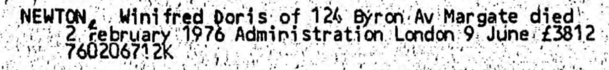
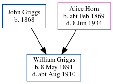

Winifred Doris Newton (née Griggs) 1899 - 1976
[ Home ] | [ Calendar ] | [ Surnames Index ] | [ Errors ] | [ Family History ]The 5th of 8 children of John Griggs (a general labourer) and Alice Horn, Winifred Griggs, the second cousin twice-removed on the father's side of Nigel Horne, was born in Margate, Kent, England on 31 Oct 18991,2,3 and baptised there on 21 Nov 1899. She married James Newton in Thanet, Kent, England around Nov 19254.
During her life, she was living at 103 Milton Road in Margate on 31 Mar 19015 and at 124 Byron Avenue in Margate on 29 Sept 19391 (the same place as her mother had been living in 1934) and in 1976.
She died on 2 Feb 1976 in Thanet3.
Parents
- John Edward was born in 1868
- Alice Clara was born c. Feb 1869
Citations
- 1939 Register - Findmypast (was the wife of the head of the household)
- England & Wales births 1837-2006 - Findmypast
- England & Wales deaths 1837-2007 - Findmypast
- England & Wales Marriages 1837-2005 - Findmypast
- 1901 England, Wales & Scotland Census - Findmypast (was age 1 and the daughter of the head of the household)
Media
Winifred Doris Griggs - Probate

1901 England, Wales & Scotland Census - GBC/1901/0007426807
England Births & Baptisms 1538-1975 - R_884652110
England & Wales births 1837-2006 - BMD/B/1899/4/AZ/000236/203
1939 Register - TNA/R39/1754/1754I/017/30
England & Wales marriages 1837-2005 - BMD/M/1925/4/AZ/000454/028
England & Wales deaths 1837-2007 - BMD/D/1976/1/AZ/000967/118
Family Tree
Map
Generated by ged2site. Last updated on Jul 3, 2024
Known Issues
Residence record for 1976 contains no citation
Listed in the residence for 29 Sep 1939, but spouse James Newton is not
Listed in the residence for 1976, but spouse James Newton is not